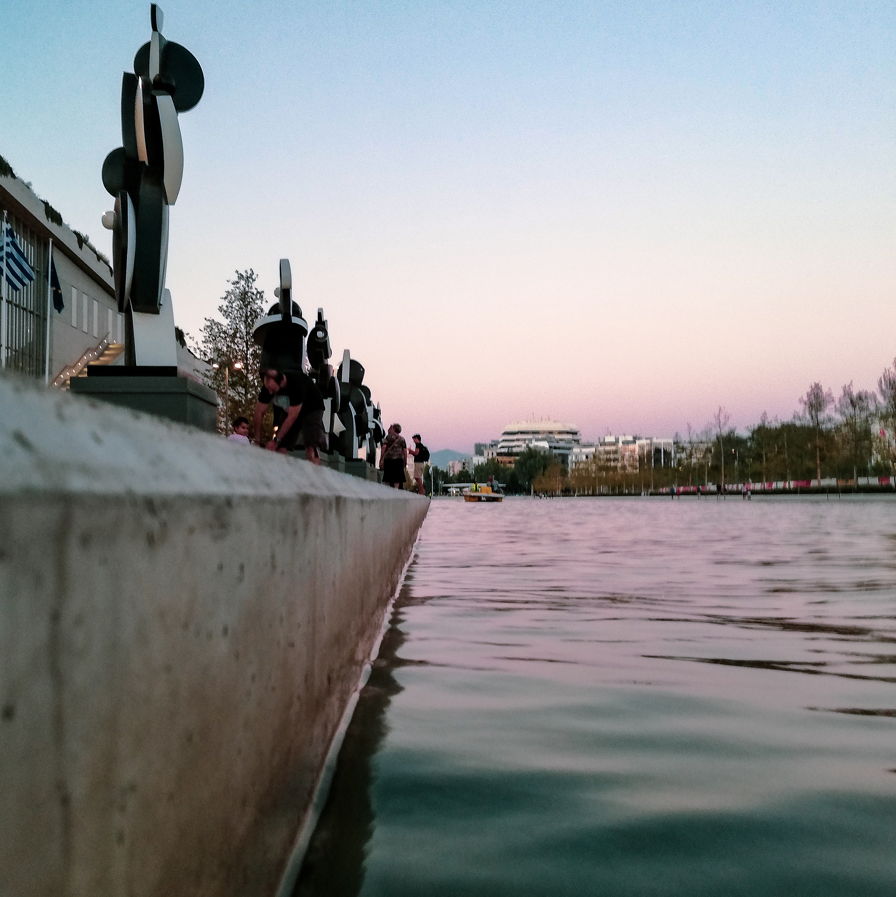
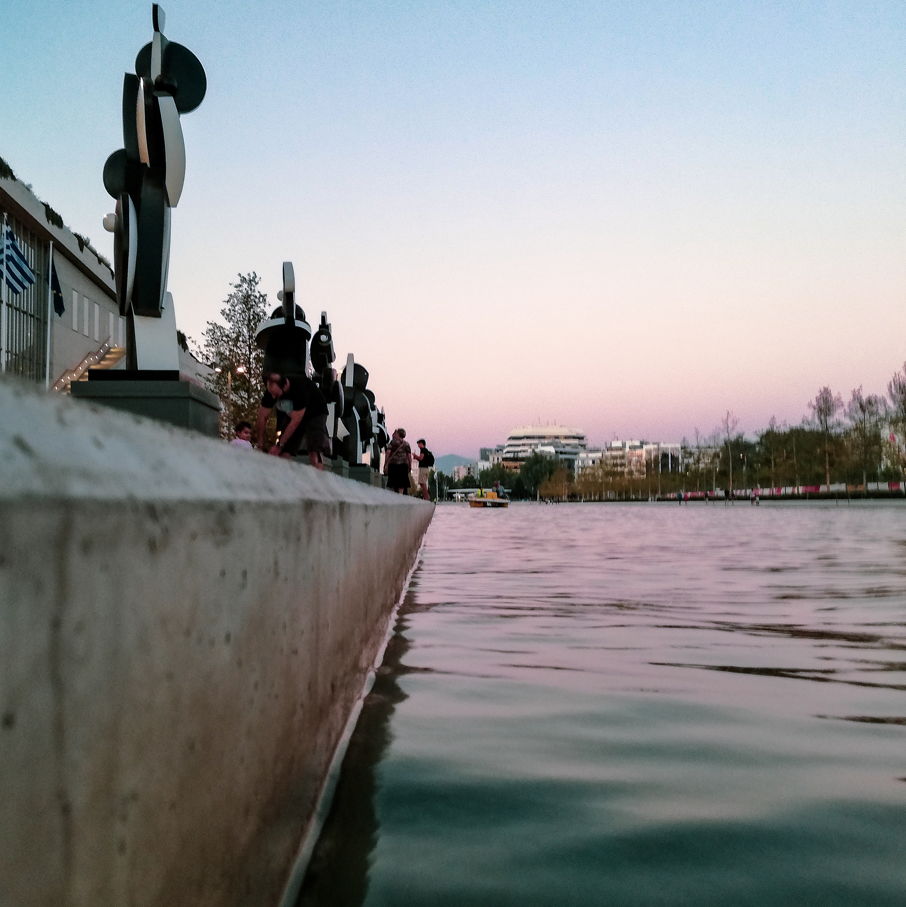
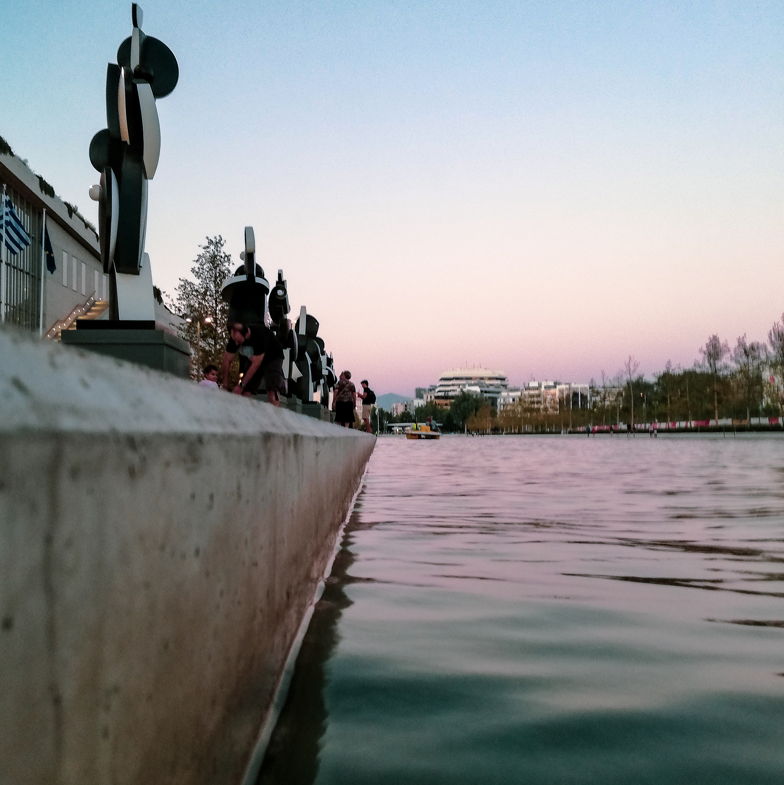

I describe myself as but you can scroll down for getting to know me better.
About
About Me
Info
I was born and raised in Vlorë, Albania, that is here, where I spent most of my childhood. Vlorë lies in the southwestern coastal region of Albania, at the southern end of the Adriatic Sea and the northern part the Ionian Sea.
In 2000 I moved to another coastal city, Kavala in Greece. This is where I found my passion for Maths & music. I participated in three Mathematical Olympiads and made the decision to pursuit a career in Mathematics. I expressed my artistic hobby of DJing firstly by hosting a weekly live show in a local radio station, Smile FM and as I grew more confident in my skills I later started playng music in small venues.
My academic studies started in the University of Crete (UOC) where I completed both my Bachelor in Mathematics and Master's in Applied and Computational Mathematics Degrees with Honors. During my undergraduate studies I took some time off while I was working, among other jobs, as a private tutor in order to support myself with my studies. My teaching experience came in handy during my last semester when working as Teaching Assistant at the Department of Mathematics of the UOC.
During my Master's studies I was introduced to my love for research. My excellent performance in my studies rendered me the Maria M. Manassaki Foundation Fellowship. At the same time I was fortunate enough to be chosen to work with Prof. Chrysoula Tsogka at the Institute of Applied and Computational Mathematics as Research Assistant.
In December of 2016 I had to abandon my life in coastal cities to continue my academic journey in the City of Lights, Paris where I starded working on my PhD thesis at the University of Paris - Saclay. I conducted my reasearch at the French Alternative Energies and Atomic Energy Commission (CEA).
This was the beginning of a unique experience in my life as I was given the opportunity to work at CEA, a global key player in research, development and innovation in areas of defence and security, renewable energies, technological research for industry, fundamental research. After many travels, deadlines, blood, sweat and tears, I successfully defended my PhD thesis on January 7th 2020.
My time in Paris as well as my travels gifted me with the cultural abundance which led to my newfound love for urban photography, a sample of which I proudly present below.
Work
My Work
Publications
[4].
Almpion Ratsakou, Anastassios Skarlatos, Christophe Reboud and Dominique Lesselier Shape reconstruction of delamination defects using thermographic infrared signals based on an enhanced Canny approach,
in Infrared Physics & Technology, vol. 11, Elsevier, 2020
DOI:
10.1016/j.infrared.2020.103527
The Canny shape-reconstruction algorithm is combined with the thermographic signal reconstruction (TSR) technique for the characterisation of delamination defects in planar multilayer structures. The adopted approach consists in fitting the raw thermographic images to a low-degree polynomial in the log–log representation of the time axis, according to TSR technique, and then apply the Canny algorithm to the reconstruction of the original signals. The proposed juxtaposition of the two treatments benefits from the inherent signal de-noising and compression of the TSR algorithm, thus enhancing the performance of the overall reconstruction process. The proposed approach has been applied using synthetic signals obtained via a 3D semi-analytical simulation code and the obtained reconstructed images have been compared with the (known) delamination geometry demonstrating satisfactory results.
[3].
Almpion Ratsakou, Anastassios Skarlatos, Christophe Reboud and Dominique Lesselier Model based characterisation of delamination by means of thermographic inspection,
in Journal of Physics: Conference Series, vol. 1476, p. 012005. 2020
DOI:
10.1088/1742-6596/1476/1/012005,
Download PDF
The objective of the work presented in this paper is to propose a fast and accurate approach for the characterisation of the delamination in single-layer metallic planar pieces using infrared thermography. This approach is based on a combination of pre-processing techniques and inversion. The inversion has been done in a reduced parameter space since the preprocessing phase gives us information about the location and the shape of the flaws in the transverse plane. The estimation of the flaws’ parameters has been carried out by an iterative data fitting method involving a fast semi-analytical three-dimensional model. The robustness of the proposed approach is numerically assessed in presence of synthetic noisy data sets in different configurations.
[2].
Almpion Ratsakou, Anastassios Skarlatos, Christophe Reboud and Dominique Lesselier Fast simulation approach dedicated to infrared thermographic inspection of delaminated planar pieces,
in AIP Conference Proceedings, vol. 2102, p. 120004, AIP Publishing, 2019
DOI:
10.1063/1.5099846,
Download PDF
In the present work, we propose a semi-analytical model based on the so-called truncated region eigenfunction expansion method, for the simulation of thermographic inspection. The problem is solved in the Laplace domain with respect to time, and the temperature distribution is approximated by its expansion on a tensor product basis. Configurations addressed by this model are stratified planar pieces affected by thin delamination flaws. Considered sources are lamps providing a thermal excitation at the surface of the inspected piece. The description of the delamination defects as thin air gaps between the piece layers proves to be equivalent with the introduction of a surface resistance to the heat flow, thus allowing their treatment via the applied modal approach without additional discretisation.
[1].
Almpion Ratsakou, Anastassios Skarlatos, Christophe Reboud and Dominique Lesselier Fast models dedicated to simulation of eddy current thermography,
in Electromagnetic Non-destructive Evaluation, volume 43, pages 175-82, IOS Press, 2018
DOI:
10.3233/978-1-61499-836-5-175
This communication presents the first development aiming at efficiently simulating configurations of eddy current thermography for nondestructive evaluation. The numerical method proposed here is based on the Finite Integration Technique for both electromagnetic and thermal problems. Simulation results obtained using two different materials, steel and aluminum, are compared and discussed with respect to the presence of a flaw affecting the piece under test.
I have been making playlists for a long time, and mixtapes before that—for about fifteen years all told, I reckon. I’m fascinated by selection and juxtaposition.
Below are links to some of my public playlists on Spotify.
Photography
Photography

Contact
Contact Me
Feel free to write me an email or simply contact me through LinkedIn.


 
